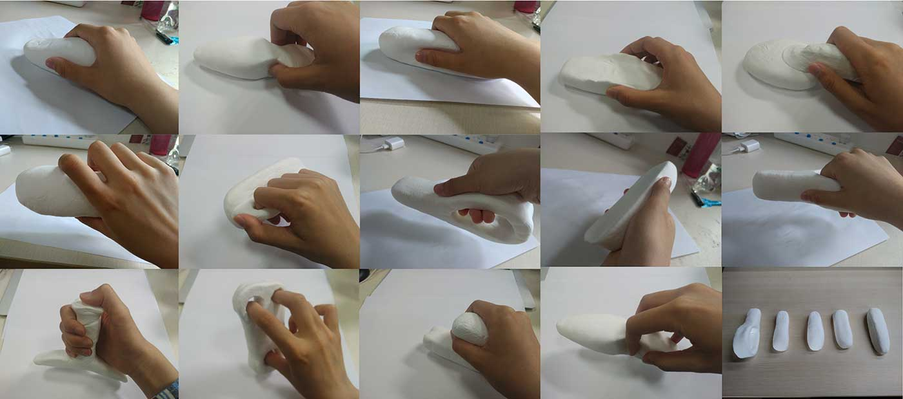
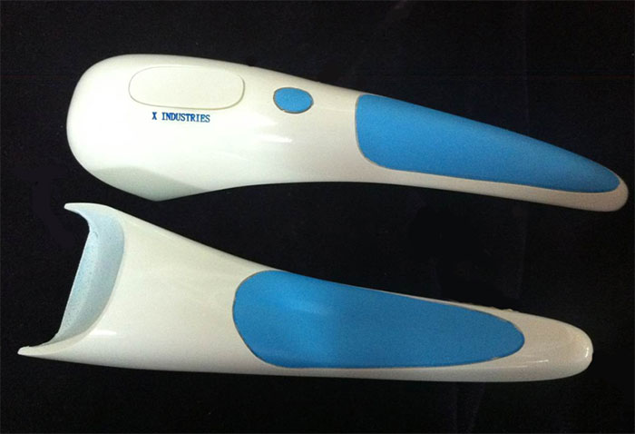

March to june 2015
Entrepreneurship Program
Product Design
Undergraduate Senior Thesis
Zhejiang University, Hangzhou
Supervised by Prof. Hao Jiang
Hospital & User Research
Smart Ruler Design
User Testing
Adornio implementation
Smart ruler was a medical device for measuring
bending angle of joint. Doctors could use smart
ruler to measure patients’ joint bending condition.
I started from hospital research (interview,
observation) to defining problem and need.
Then I continued on concept design, product
exterior design and implementing technically.

I went to Hangzhou Shaoyifu Hospital for interviews. In orthopaedic rehabilitation department, doctors need to record the bending angles of patients' limbs, but at present they still used traditional methods and recorded the data in the paper, which was not only inconvenient, but often led to mistakes.

Hospital Research

Doctors and patients interviews
Basic functions:
• Record the bending angles of patients' limbs intelligently and digitally.
• Comfortable for doctors to use in a handheld ergonomic way.
• Patients feel comfortable when being tested.
How to design a device which can both satisfy usability and handheld
ergonomics?
Handheld ergonomics would be the key point to continue the design.
Were there any design guildlines for medical device? What should be paid attention to specially in designing medical device? With these questions, I did medical devices research to get an overview of the medical device design on the market.

Structure Research

Color Research
After a general research of the medical devices design, I went further to the handheld device field and tried to get the inspiration of handhled device design.

Handheld Device Research
I used light soil to explore the structure of handheld device in order to find a comfortable and beautiful structure.

Light Soil Structures
In order to get the feedbacks from real users, I used light soil structure to conduct user testings.It provided the clues for me to decide which structure better fitted human factor.

Light Soil Structre Testing
My friend Zhang assisted me to develop the hardware and software design. We used Arduino to develope the hardware.

Hardware Implementation

Another challenge is how to fit the exterior design with the size of electric board. At the beginning, I always put the electric board in a horizontal direction which limited the design of product exterior. Inspired by light soil experiment and paper sketch, the Aha moment came as the reverting α angle of electric board from horizontal line. In this case, the possibility of product exterior design is expanded.


3D model

Real Model
© 2017 My Profile. All Rights Reserved | Design by Chenghong